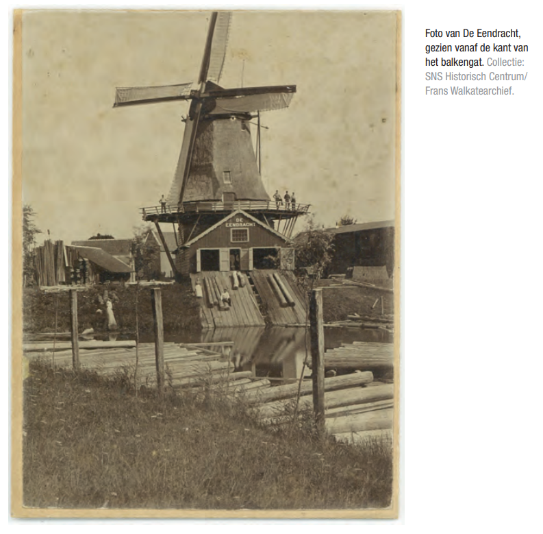

Clubhuis Padvindsters
Na de oprichting in 1936 zijn de padvindsters actief in een soort buitenverblijf (keet op wielen) aan de zuidkant van Kampen ter hoogte van de oprit van de Molenbrug. Dit was het eerste clubhuis van de voorgangsters van de Hanzeluiden.
Er zijn nog oude foto’s dat zij aan de rand van de nog bestaande kolk in het grxas liggen. Vroeger stond aan de IJssel hier molen de Eendracht aan de Kolk van Kramer, met aan de oever een grote houthandel/ timmerwerkplaats - later een autobandenopslag (welke vaak in de fik vloog).

Molen "de Eendracht"